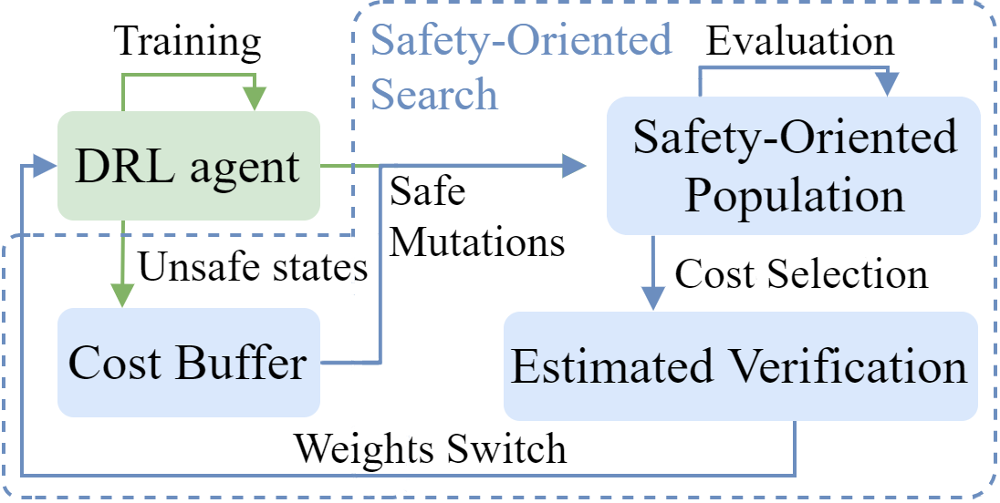
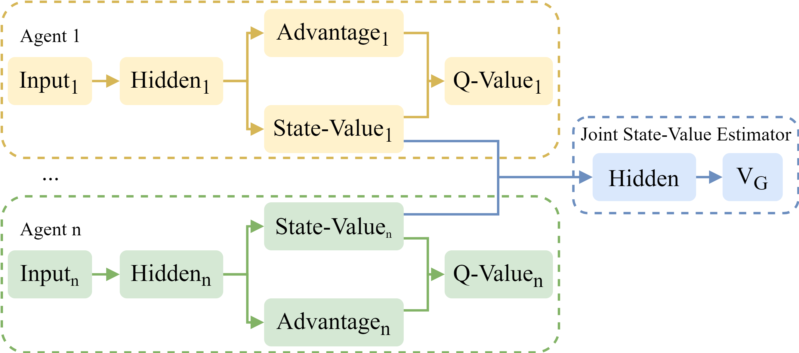
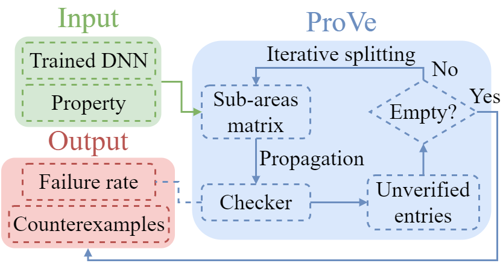
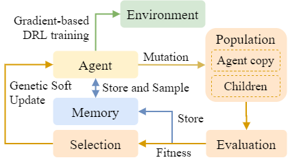

Exploring Safer Behaviors for Deep Reinforcement Learning
E. Marchesini, D. Corsi, A. Farinelli - AAAI 2022
We propose a perspective on Safe DRL combining EAs and Formal Verification.
Postdoctoral Research Associate
Northeastern University, Boston.
Scaling up Deep RL for Autonomous Agents.
I am a Postdoctoral Research Associate at Northeastern University's Khoury College of Computer Science, Boston (MA), USA. Previously, I received my Ph.D. at the University of Verona, Italy in 2022. My research focuses on scaling up Deep Reinforcement Learning to practical domains, developing novel algorithms for (Safe) Deep RL in simulation, robotics, and multi-agent systems. I'm also an Evolutionary Algorithms enthusiast, investigating their combination with Deep RL. Outside of work, I love climbing and hiking.
Partial list. You can find a more comphrensive list on my Google Scholar profile.

E. Marchesini, D. Corsi, A. Farinelli - AAAI 2022
We propose a perspective on Safe DRL combining EAs and Formal Verification.

E. Marchesini, A. Farinelli - IROS 2021
We propose a Multi-Agent DRL approach that relies on Dueling Networks to learn a joint State-Value to enhance cooperation.

D. Corsi, E. Marchesini, A. Farinelli - UAI 2021
We propose a Formal Verification framework to guarantee desired behaviors of Deep Reinforcement Learning policies.

E. Marchesini, D. Corsi, A. Farinelli - ICLR 2021
We propose a framework to combine Evolutionary Algorithms and Deep Reinforcement Learning.